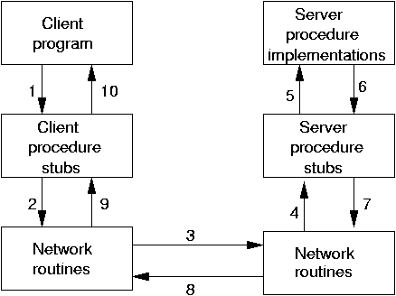

Socket and HTTP programming use a message-passing paradigm. A client sends a message to a server which usually sends a message back. Both sides ae responsible for creating messages in a format understood by both sides, and in reading the data out of those messages.
However, most standalone applications do not make so much
use of message passing techniques. Generally the preferred
mechanism is that of the function (or method or
procedure) call. In this style, a program will call a function
with a list of parameters, and on completion of the function
call will have a set of return values. These values may
be the function value, or if addresses have been passed as
parameters then the contents of those addresses might have been
changed.
The remote procedure call is an attempt to bring this style of programming into the network world. Thus a client will make what looks to it like a normal procedure call. The client-side will package this into a network message and transfer it to the server. The server will unpack this and turn it back into a procedure call on the server side. The results of this call will be packaged up for return to the client.
Diagrammatically it looks like

where the steps are
There are two common styles for implementing RPC. The first is typified by Sun's RPC/ONC and by CORBA. In this, a specification of the service is given in some abstract language such as CORBA IDL (interface definition language). This is then compiled into code for the client and for the server. The client then writes a normal program containing calls to a procedure/function/method which is linked to the generated client-side code. The server-side code is actually a server itself, which is linked to the procedure implementation that you write.
In this way, the client-side code is almost identical in appearance to a normal procedure call. Generally there is a little extra code to locate the server. In Sun's ONC, the address of the server must be known; in CORBA a naming service is called to find the address of the server; In Java RMI, the IDL is Java itself and a naming service is used to find the address of the service.
In the second style, you have to make use of a special client API. You hand the function name and its parameters to this library on the client side. On the server side, you have to explicitly write the server yourself, as well as the remote procedure implementation.
This approach is used by many RPC systems, such as Web Services. It is also the approach used by Go's RPC.
Go's RPC is so far unique to Go. It is different to the other RPC systems, so a Go client will only talk to a Go server. It uses the Gob serialisation system discussed in chapter X, which defines the data types which can be used.
RPC systems generally make some restrictions on the functions that can be called across the network. This is so that the RPC system can properly determine what are value arguments to be sent, what are reference arguments to receive answers, and how to signal errors.
In Go, the restriction is that
error
F(&T1, &T2) error
The restriction on arguments means that you typically have to define
a structure type. Go's RPC uses the gob package for
marshalling and unmarshalling data, so the argument types have to
follow the rules of gob as discussed in an earlier
chapter.
We shall follow the example given in the Go documentation, as this illustrates the important points. The server performs two operations which are trivial - they do not require the "grunt" of RPC, but are simple to understand. The two operations are to multiply two integers, and the second is to find the quotient and remainder after dividing the first by the second.
The two values to be manipulated are given in a structure:
The sum is just an
type Values struct {
X, Y int
}
int, while the quotient/remainder
is another structure
type Quotient struct {
Quo, Rem int
}
We will have two functions, multiply and divide to be callable on the
RPC server. These functions will need to be registered with the RPC
system. The function Register takes a single
parameter, which is an interface. So we need a type with these
two functions:
The underlying type of
type Arith int
func (t *Arith) Multiply(args *Args, reply *int) error {
*reply = args.A * args.B
return nil
}
func (t *Arith) Divide(args *Args, quo *Quotient) error {
if args.B == 0 {
return error.String("divide by zero")
}
quo.Quo = args.A / args.B
quo.Rem = args.A % args.B
return nil
}
Arith is given as int.
That doesn't matter - any type could have done.
An object of this type can now be registered using
Register, and then its methods
can be called by the RPC system.
Any RPC needs a transport mechanism to get messages across the
network. Go can use HTTP or TCP. The advantage of the HTTP
mechanism is that it
can leverage off the HTTP suport library. You need to add an RPC
handler to the HTTP layer which is done using HandleHTTP
and then start an HTTP server. The complete code is
The client needs to set up an HTTP connection to the RPC server.
It needs to prepare a structure with the values to be sent, and
the address of a variable to store the results in.
Then it can make a Call with arguments:
A client that calls both functions of the arithmetic server is
A version of the server that uses TCP sockets is
Note that the call to Accept is blocking, and just
handles client connections.
If the server wishes to do other work as well, it should call
this in a goroutine.
A client that uses the TCP server and calls both functions of the arithmetic server is
We note that the types of the value arguments are not the same on
the client and server. In the server, we have used Values
while in the client we used Args. That doesn't matter,
as we are following the rules of gob serialisation,
and the names an types of the two structures' fields match.
Better programming practise would say that the names should be
the same!
However, this does point out a possible trap in using Go RPC.
If we change the structure in the client to be, say,
then
type Values struct {
C, B int
}
gob has no problems: on the server-side
the unmarshalling will ignore the value of C
given by the client, and use the default zero value for
A.
Using Go RPC will require a rigid enforcement of the stability
of field names and types by the programmer.
We note that there is no version
control mechanism to do this, and no mechanism in gob
to signal any possible mismatches.
This section adds nothing new to the earlier concepts.
It just uses a different "wire" format for the data,
JSON instead of gob.
As such, clients or servers could be written in other
languasge that understand sockets and JSON.
A client that calls both functions of the arithmetic server is
A version of the server that uses JSON encoding is
RPC is a popular means of distributing applications. Several ways of doing it have been presented here. What is missing from Go is support for the currently fashionable (but extremely badly enginereed) SOAP RPC mechanism.
If you like this book, please contribute using Flattr
or donate using PayPal